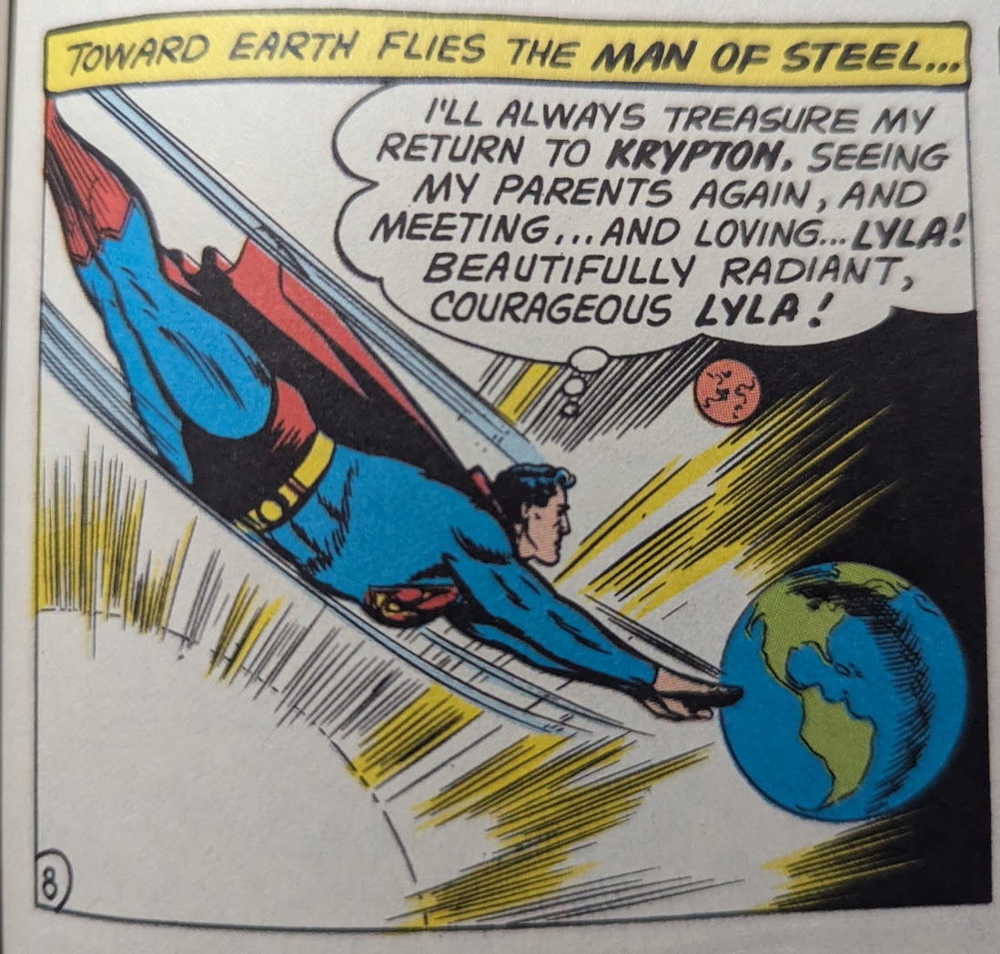

The hype moments and aura of stories.
Hellboy, Superman, The Trask Boys. I've been reading a lot of stories about heritage, I hadn't noticed until I started thinking about Superman Birthright yesterday. I'll think about it more tonight.
I've only ever read three or four Superman Stories in my life. My preliminary understanding of the character was that he was more akin to a symbol than an individual. I never gave much thought to his actual characterization until the buildup to the movie: Superman (2025). The few stories I did read also left me feeling a lack of real attachment to Superman. The Death of Superman was fun but I didn't really learn anything about him, I guess it would have meant more to someone who had followed his life story for years, alas. Superman in the Sixties was a little thing I picked up from the thrift store one time, in it contained all sorts of silly happenings and the occasional heartfelt story about loss, powerlessness, or heritage. The story that sticks out to me most from that book is "Superman's Return to Krypton: Parts I - III", it's a remarkably sweet story about how it felt for Superman to be actually able to visit his homeworld. The next two are less Superman Stories as much as they are stories which have Superman at their heart. JLA: The Nail and Doomsday Clock, both of these stories deal with the idea of Superman as an integral part of the DC universe. That Superman in many ways is the guiding light from which the world is truly able to become a good place. To be clear I think that The Nail is a much better story than Doomsday Clock but both of them have that central theme. The world forms around that one lost son. Without him, things may not always be so bright.
 Superman (1939)# 141That's just the thing though isn't it. He's not just a symbol, he is a man. He is Human, he is a Kryptonian, and he is so much more. He is no one thing, he is an individual formed from his experiences as anyone else is, and he can play the role of Superman but he is subject to its stressors as much as anyone else is. I didn't understand why the name Kal-El was important. Afterall he was raised in Kansas, raised by Martha and Jonathan Kent, so why would his birth name matter at all. It's still not a struggle than I can personally relate to but I think that Superman Birthright helped me understand him just a bit more. The plot of Superman Birthright in its most bare form is as follows: Clark Kent is a young man who is inspired by the actions of the ill-fated activist Kobe Asaru, from his actions Clark is inspired to start using his powers to make a real change in the world. He returns home to his farm in Kansas and his idea is greeted with reproach by his adoptive father. See, Jonathan sees this as Clark having rejected humanity but Jonathan doesn't yet haev the proper insight to get where Clark is coming from. I'm sort of similar to Jonathan in that regard I think "Why would you want that ! Isn't what you got going on here good enough ? Are we not good enough for you ?". Jonathan is wrong, I was wrong. Embracing his heritage is not a rejection of his humanity itself. They aren't mutually exclusive to one another and Clark isn't wrong for wanting to embrace that even if it's not something Jonathan can fully understand. Not too long after they're able to reconcile and the Metropolis Clark Kent identity is born alongside the Superman identity. The rest of the story deals with his first outings as Superman and Lex Luthors background in this universe, all of which I think is done perfectly fine. I think Luthors' background is particularly effective actually. The story ends on a very sweet note where Clark learns his birth name: Kal-El and is able to communicate that he survived to his parents in his final moments. I don't know, I just think it's a pretty good Superman story, when I first read it I don't think I understood what made it so special to everyone. Why were people so insistent that this was like such fundamental Superman literature. The problem was that I was focused on the wrong thing. I was focused too much on the overt events in Metropolis, the direct conflict between Superman and Luthor that I ignored the (more compelling IMO) conflict that Clark/Kal-El was having inside, that solitude, that endless loneliness that he must've felt. Even if he wasn't necessarily always alone, he always felt like it. Anyways yeah I think it's pretty good and is a pretty good story to use as a blueprint for any normal version of Superman.